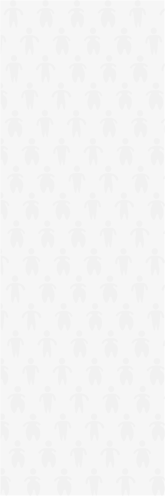
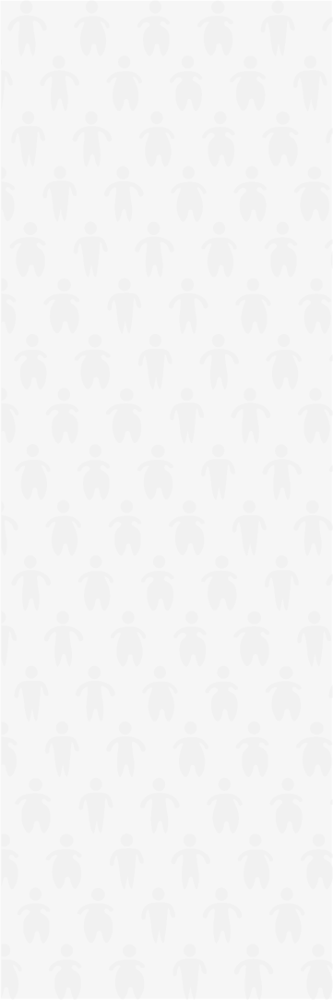
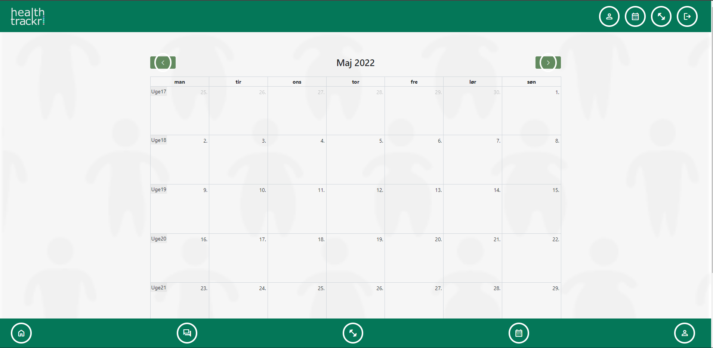
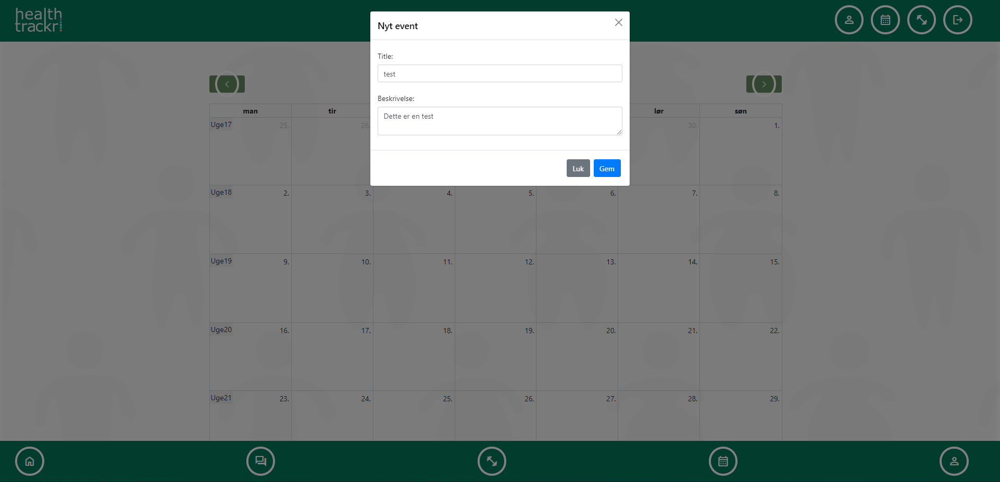

Introduktion
Til udformning af designet, er der blevet kigget og søgt efter, hvordan andre apps / produkter med lignende koncepter har opstillet deres layout go indhold, her er der særligt kigget på kendte og hyppigt brugte apps i trænings miljøet. Der er i den forbindelse blevet kigget på fitness world, Apple Fitness +, Google Fit og Samsung Health, da de er nogle
af de træning og velness app der er mest udbredt i Danmark.
Derudover, er der også taget inspiration fra Facebook Messenger og Google Calender, til uformning af chatten og
kalender, og Min Sundhed til at holde den røde tråd, således at produktets reflektere mennesker i forbedring, og
mennesker der får hjælp.
Link til online UI-Pattern mappe, opdelt efter indhold og brug.
Indsæt link her….
Denne styleguide er også brugt som CSS til det endelige produkt, og der er derved ikke beskrevet CSS i kode afsnit til de forskellige elementer.
Logoer
Begrundelse for design og brug af logo
Til produktet er der blevet designet et logo som reflektere klientens værdier, samt deres koncept og produkt. I den forbindelse er der gjort brug af figurer der ligner mennesker, samt farver der symbolisere netop de værdier.
I logoet spiller figurene en central rolle, da de ikke blot illustrære hvad konceptet er, men også reflektere hvad der
er fokus på i produktet og for klienten. Dertil gøres der brug af farver som netop symbolisere velværd, helbred, energi og omsorg, i form af den grønne og den røde, hvori den røde også er en farve som i Danmark er central i vores sygevæsen.
Farver
Tyrkis
Sort tyrkis
#013c2b
$black-tyrkis
Mørk tyrkis
#068a81
$dark-tyrkis
Primær tyrkis
#63c1c4
$primary-tyrkis
Lys tyrkis
#84ccd4
$light-tyrkis
Hvid tyrkis
#c9e7eb
$white-tyrkis
Grøn
Sort grøn
#013c2b
$black-green
Mørk grøn
#047758
$dark-green
Primær grøn
#50b795
$primary-green
Lys grøn
#79c5b2
$light-green
Hvid grøn
#b7ded7
$white-green
Blå
Sort blå
#062b37
$black-blue
Mørk blå
#10556e
$dark-blue
Primær blå
#159cc9
$primary-blue
Lys blå
#57c3e8
$light-blue
Hvid blå
#b8e1f2
$white-blue
Lilla
Sort lilla
#161528
$black-purple
Mørk lilla
#33315c/p>
$dark-purple
Primær lilla
#5756a0
$primary-purple
Lys lilla
#8a88c0
$light-purple
Hvid lilla
#d8d7ea
$white-purple
Pink
Sort pink
#281519
$black-pink
Mørk pink
##6a3944
$dark-pink
Primær pink
#aa6070
$primary-pink
Lys pink
#cea3ac
$light-pink
Hvid pink
#f2e4e7
$white-pink
Ekstra
Tyrkis tint
#daeef1
$tyrkis-white
Grøn tint
#cfe5e0
$green-white
Blå tint
#daedf4
$blue-white
Lilla tint
#e3e2ee
$purple-white
Pink tint
#faf0f2
$pink-white
Hvid
#efefef
$hvid
Sort
#212529
$sort
Begrundelse for valg og brug af farver
Til produktet har teamet valgt at bruge grøn en række faver, med udgangskunkt i klientens ønsker, samt ekstra farver baseret på farvernes symbolik.
Den primære og dominerende farver er den grønne, som symbolisere håb, energi, sundhed og velværd, værdier som klienten ferne vil assisoieres med og brandes som.
Dertil er der blevet valgt og brugt 4 komplimntære farver, Pink, Lilla, Blå og en Tyrkis. Ideen er at skabe en palette hvis farver sammen symbolisere sundhed som helhed.
Den Pinke valgt er inspireret af de farver man ser i bladt andet MinSundheds appen, hvor en den røde farve er dominant.
Den Lillae, en farve der kombinere den blå og røde farve, siges at symbolisere det alvorlige, og kan oftes ses i kirker under påsken.
Den blå farve, symbolisere det fordybende, rolige, stabile og beskyttende, hvilket folk i forbedring og genoptræning har brug for.
Den tyrkis farve, er lig den lillae, en blanding mellem det grønne og det blå. Den siges at symboliere det forfriskende, pålidelige, troværdige og beroligende, og assosieres ofte med former for kommunikation.
Ved brug af disse farver, bliver produktet, præget af liv, varme, energi, håb og kærlighed, hvilket, vi mener går hånd i hånd med
klientens kerneværdier, morale og målsætning, ved udarbejdelsen af deres koncept.
Ikoner
Begrundelse for valg og brug af ikoner
Teamet har fundet og lavet ikoner, med udgangspunkt i et simpelt, minimalistisk, klart og tydeligt design, hvori
ikonernes betydning og brug er indlysende for brugeren.
Alle ikonerne i produktet, er holdt simple, både i udformning og i mængden af detaljer, for at sikre at det er lige til
for en bred gruppe brugere. Hertil, er det også blevet valgt at alle ikoner med undtagelse af dem til profil siden, er
runde, for at symbolisere helhed og noget i evig bevægelse, da cirkler ingen begyndelse og ende har og derved kan ses
som være et objekt i konstant bevægelse.
Knapper
Afrundede
Kantede
Begrundelse for valg og brug af Knapper
For at komplimenter farverne der er valgt, samt repræsentere klientens værdier, har teamet lavet knapper, hvori kanter,
hjørner og design, reflektere et imødekommende, blødt og blidt image.
Der er derfor gjort brug af bløde og afrundede hjørner, for at give et indtryk af afslapning og ro, på de steder hvor
det visuelle er mere i fokus, og gjort brug af mere kantede hjørner, hvor information skal stå tydeligt og klart.
Forskellen kan også forklares som, vigtig data i form af læge faglig materiale, journaler, patientinformation - kantede
hjørner, og anden information i form af beskrivelser af øvelser, kalender, chatbeskeder - afrundede hjørner.
Base kode til knapper
<button class="xxxx-button-x"><p>Knap</p></button>
Alt efter hvilken type knap ændre x værdierne sig.
Bokse
Afrundede tekst bokse
Boks eks 1
Indhold i bokse, som bruge i produktet
Boks eks 2
Indhold i bokse, som bruge i produktet
Boks eks 3
Indhold i bokse, som bruge i produktet
Boks eks 4
Indhold i bokse, som bruge i produktet
Boks eks 5
Indhold i bokse, som bruge i produktet
Kantede tekst bokse
Boks eks 1
Indhold i bokse, som bruge i produktet
Boks eks 2
Indhold i bokse, som bruge i produktet
Boks eks 3
Indhold i bokse, som bruge i produktet
Boks eks 4
Indhold i bokse, som bruge i produktet
Boks eks 5
Indhold i bokse, som bruge i produktet
Begrundelse for valg og brug af bokse.
Ligesom knapperne er boksene brugt i produktet, designet således at de reflektere et imødekommende blødt og blidt image, da det er hvad klienten gerne vil fremstå som i deres brugeres øjne.
Der er derfor gjort brug af afrundede og runde bokse, her bruges de afrundede bokse når der er tale om tekst bokse, og
de runde bruges når der er tale om visuelle elementer som billeder.
Når afrundede bokse bruges er titel og brødtekst inde i boksen, hvor titel og brødtekst ved de runde bokse er ved siden af. I begge tilfælde er tekst og boks tæt på hinanden for at illustrære at der er en relation mellem dem.
Base kode til tekst bokse
<div class="xxxx-boks-x"><h3>Boks titel</h3><p>Indhold i boks</p></div>
Alt efter hvilken boks ændres x værdierne, og indholdet.
Typografi
Header tekst - Verdana Fed - 40px
ABCDEFGHIJKLMNOPQRSTUVXYZÆØÅ
abcdefghijklmnopqrstuvxysæøå
Sub Header tekst - Verdana Italic - 30px
ABCDEFGHIJKLMNOPQRSTUVXYZÆØÅ
abcdefghijklmnopqrstuvxysæøå
Brød tekst - Verdana Regular - 15px
ABCDEFGHIJKLMNOPQRSTUVXYZÆØÅ
abcdefghijklmnopqrstuvxysæøå
Begrundelse for valg og brug af typografi.
Til produktet er tekst fonten Verdana blevet valgt, da den er skabt for at løse udfordringer der kan være ve skærmisning. Derudover, er Verdanas eneste formål at forbedre læsbarheden for tekst, da bredde og afstand mellem bogstaverne gør den ideal til både skærm og trygt materiale.
Da selve produktet skal bruges som et ekstra tilbud / værktøj til patienter i genoptræning, er det vigtigt at der er fokus på den professionelle fremtoning, hvilket er det Verdana er stærk i.
Billeder
Baggrunde
 



Begrundelse for valg og brug af billeder
Der er i forbindelse med projektet, blevet optaget video klip og fotograferede personer og ting af relevans til projektet. Disse bliver brugt i det endelige produkt, og er med til at skabe interesse og relevance for den almene bruger.
Forme
Opret Bruger Form
Begrundelse for design og brug af forme
Til produktet skal der gøres brug af en data base, hvori information omkring brugerne skal gemmes, til dette er der
derfor blevet lavet et form som nye brugere skal udfylde, som bliver koblet direkte til databasen.
Formen er designet således at den er simpel, både visuelt og i indhold, så en bred målgruppe af brugere nemt kan forstå
og udfylde formen. Derudover, gøres der brug af de farver som er valgt til produktet, heriblandt, bruges den grønne
farve som baggrund så den er central og skaber klar kontrast med tekst boksene i formen.
Selve formen er præget af afrundede bløde hjørner, med klar og tydelig placeholder information tekst i hver felt så
brugeren an se hvad de skal skrive i feltet. Dette viser hvordan klienten er imødekommende og informerende, samt at de
guider deres brugere igennem bruget af produktet.
Kalender
 Begrundelse for design og brug af kalender
Til kalendere, er der lavet en mindre månedlig oversigts tabel, som brugeren kan bruge til hurtigt at orientere sig om
de dage hvor de skal træne. Dertil, er der en dags oversigt, i form af en liste nedenunder, hvori de kan finde mere
information omkring træningen på dagen.
På den måde kan de rutinerede brugere orientere sig om dage for træning, og de mindre kan orientere sig om både dagen
for træning og selve træningen for dagen, uden at de skal ind og finde den manuelt i måneds tabellen.